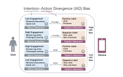
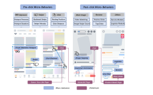
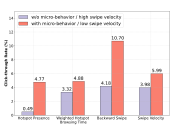
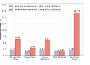

ERMB captures the signals between exposure and action.
ERMB: E-commerce Recommendations with Micro-Behaviors Dataset. An industrial-scale dataset preserving fine-grained interaction trajectories for user intention modeling.
Introduced inEBD: Engagement-aware Bidirectional Debiasing with User Micro-Behaviors in E-commerce Recommendations
VenueCIKM 2026 · Rome, Italy · November 7–11
66.55Mimpressions
22.76Mclicks
15.80Musers
8.01Mitems
100+micro-behavior signals
01 / ABOUT THE PAPER
This repository accompanies our paper accepted by CIKM 2026. To mitigate the IAD bias, our paper makes the following contributions:
Beyond binary labels.
Click-through Rate (CTR) prediction and Conversion Rate (CVR) prediction, as core tasks in modern e-commerce recommender systems, are conventionally formulated as binary classification tasks using click/purchase labels. However, this paradigm suffers from Intention-Action Divergence (IAD) bias, where users' explicit actions (e.g., click/purchase) misalign with their implicit interest levels inferred from fine-grained interactions (e.g., dwell time, swipe velocity).

Figure 1 High IAD bias occurs when explicit actions contradict the engagement revealed by micro-behaviors.
We mine more than one hundred kinds of user-device interactions in the decision-making process, termed Micro-Behaviors (MBs), categorized into pre-click MBs (pre-MBs) and post-click MBs (post-MBs). Instead of constructing resource-consuming sequential features, we compress MBs into a lightweight sample-level engagement score that scalably quantifies users' intentions for billions of samples.
For the CVR task, we propose the P²ED approach, which emphasizes low-bias samples and incorporates pairwise intention modeling as an auxiliary task, utilizing the predefined engagement scores only during training (since MBs are inaccessible in online serving).
03
Engagement-aware Bidirectional Debiasing (EBD).
To extend P²ED to the CTR task despite missing engagement scores in non-click samples, we propose a siamese co-training framework in which the CTR module and the engagement module debias each other bidirectionally.
04
Open-source Dataset.
We release ERMB, the first public dataset with rich MB signals, to advance research on MBs and IAD bias.
+2.2‰CVR AUC
+1.4‰CTR AUC
+4.27%GMV growth
+1.38%IPV lift
Offline evaluation and online A/B tests reported in the paper. The framework has been deployed on a major e-commerce platform.
Our method delivers +2.2‰ / +1.4‰ AUC gains on CVR/CTR offline evaluation and drives +4.27% GMV growth and +1.38% IPV lift in online A/B tests. The framework has been deployed on a major e-commerce platform.
02 / ABOUT THE ERMB DATASET
Industrial scale. Interaction-level detail.
The ERMB dataset is the first publicly available industrial-scale recommendation dataset containing rich micro-behavioral signals. Unlike existing public benchmarks that only log terminal actions such as clicks or conversions, ERMB preserves the fine-grained interaction trajectory between exposure and final action, enabling a faithful investigation of user intention modeling through MBs.
Derived from a major e-commerce platform, ERMB comprises 66.55 million impression samples collected across diverse product categories and user segments — significantly larger than widely recognized CTR prediction benchmarks such as Avazu, Criteo, and MovieLens.
01
User / item / context
Conventional user, item, and contextual features.
02
Behavior sequences
Behavior sequence features.
03
Micro-behaviors
More than one hundred signals spanning pre-click cues and post-click activities.
◎
Rigorous anonymization protocols, including identifier hashing and attribute generalization, are applied to ensure data privacy compliance.
Dataset statistics
Values reported in the README
ERMB train, test, and total dataset statistics
Dataset Split
#Users
#Items
#Impressions
#Clicks
Train
12.75M
7.17M
52.59M
18.01M
Test
3.79M
3.33M
13.96M
4.75M
Total
15.80M
8.01M
66.55M
22.76M
03 / MICRO-BEHAVIORS
A trajectory, not just a label.
Pre-click MBs occur on the dual-column feed before a click decision, grouped into exposure, swipe, and click signals.
Post-click interactions occur in single-column Waterfall Pages (WP) and Product Detail Pages (PDPs), which provide richer interactive elements and detailed item metadata. These post-click engagements yield more granular signals for inferring users' intent, as the expanded interface enables deeper exploratory behaviors. In total, the ERMB dataset contains more than one hundred post-MBs, grouped by different user interaction modules.
Pre-click Micro-Behaviors (Pre-MBs)

Figure 2 The micro-behavior map follows the page-view process from a two-column feed through the Waterfall Page and Product Detail Page.
EXPOSURE
Hotspot Presence
Whether the item has complete static exposure in the visual hotspot.
Hotspot Dwell Duration
Total duration of staying still in the visual hotspot.
Weighted Hotspot Browsing Time
Weighted total duration of static and swiping browsing in the hotspot.
SWIPE
Backward Swipe
Whether there is swiping downward to the visual hotspot.
Swipe Velocity
Velocity of finger swiping.
Velocity Levels
Level of velocity: high, medium, or low.
CLICK
Click Distance
Movement distance from the resting position to the click position.
Click Distance Levels
Level of click distance: long, medium, or short.
PRE-CLICK EVIDENCE
Effects of Pre-MBs on CTR

Signals such as hotspot presence and backward swipe reveal large differences in click-through rate.
POST-CLICK EVIDENCE
Effects of Post-MBs on CVR

Downstream interactions reveal different levels of intent beyond the click itself.
DOCUMENTED SIGNALS
Post-click Micro-Behaviors (Post-MBs) in ERMB
Representative post-MBs include Product Detail Page Dwell Time, Swipe Down, Recommend-Tab Clicks, Review Tag Clicks, Review Views, Ask Everyone Entry Clicks, Product Detail Image Clicks, Image Zoom-Ins, Share, Service Module Clicks, and Live Chat Clicks. The complete list of additional post-MBs with definitions is provided in additional_post_mbs.md.
No documented signal matches this search.
04 / REPOSITORY & RELEASE
Dataset Coming Next.
05 / CITATION & LICENSE
Cite ERMB & EBD.
If you use the ERMB dataset or find our work helpful, please cite:
License. The source README states: “The dataset is released for research purposes only. Please refer to the license file in dataset/ for terms of use.” The referenced license file is not yet present and will be added before the dataset becomes downloadable.
BIBTEX
@inproceedings{wang2026ebd,
title = {EBD: Engagement-aware Bidirectional Debiasing with User Micro-Behaviors
in E-commerce Recommendations},
author = {Wang, Weiqiu and Zhang, Runfeng and Liu, Yifei and Zhu, Anqi and Fang, Jie
and Pan, Mingming and Jiang, Haihong and Xu, Wen and Yu, Yipeng and Yu, Jiahao
and Wang, Yijiao and Yang, Yeqiu and Sun, Fei and Wu, Jian and Jiang, Yuning
and Liu, Xu and Feng, Chengxiao and Zheng, Bo},
booktitle = {Proceedings of the 35th ACM International Conference on Information and
Knowledge Management (CIKM '26)},
year = {2026},
doi = {10.1145/3799682.3840628}
}